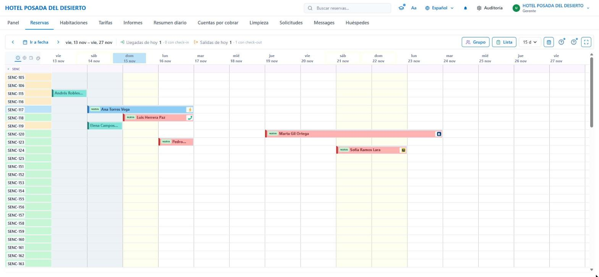

1
Ubícate en el Tapechart (Calendario de reservas)
La pantalla tiene dos partes: arriba, una barra de herramientas; debajo, el cuadro con las habitaciones y las noches.

- 1Pestaña Reservas: te trae aquí desde cualquier pantalla.
- 2Fechas: flechas, Ir a fecha y las fechas que estás viendo. Lo ves en la sección 6.
- 3Llegadas de hoy y Salidas de hoy: cuántos huéspedes llegan y se van hoy y, en gris, a cuántos ya les hiciste el check-in o el check-out.
- 4Botones: grupo, lista, número de días y vista. Los ves en las secciones 7, 8 y 9.
- 5El cuadro: cada fila es una habitación y cada columna, una noche. Lo ves en las secciones 2 a 5.
En tu turno: esta será tu pantalla principal. Déjala abierta durante el turno y vuelve a ella con la pestaña Reservas.